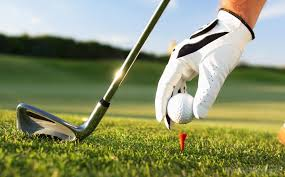

Another popular and expensive game, because the land it demands, is golf, which is a Scottish game.
Golf was born in China, in the Xth century, and was named "chiuwan". The players knocked a ball in holes, with a cane. In the Middle-ages it was introduced in Europe. Then, in the XIVth century, a similar game appeared, with different names "kolf" or "cambuc" in England, "hurley" in Ireland, "shinty" in Scotland, "chole" in France, and "pall mall" in Italy. The players played it in the country, with a ball and a curved staff. They didn't put the ball in holes, but projected it on targets, generally doors. Because his archers played instead of working golf was forbidden in 1457 by James 1st, king of Scotland. In 1608, James 1st allowed golf again and founded in Blackheath a course with 7 holes. In 1744, the Company of Gentlemen Golfers, now the Honourable Company of Edinburgh Golfers, was created. Deciding in 1858 that golf would be played with 18 holes, The Society of Saint Andrews, now the Royal and Ancient Golf Club of Saint Andrews, was founded in 1754 in Scotland.